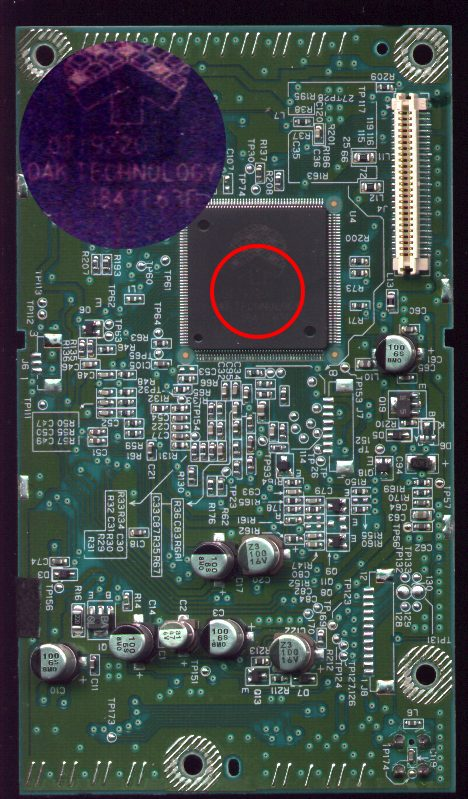
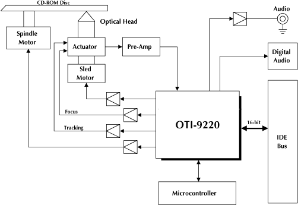
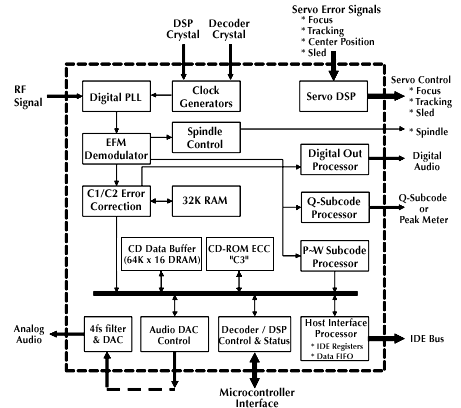
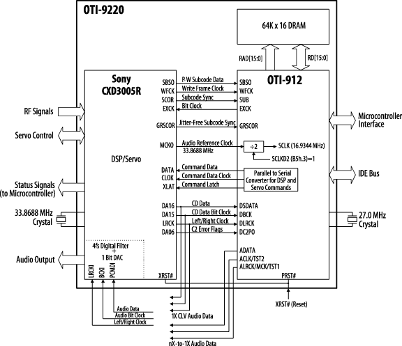

The Sega Dreamcast GD-ROM system utilizes Oak Technology's OTI-9220 CD-ROM controller which is a single chip integration of Sony's "CXD-3005R" DSP/Servo control and Oak Technology's "OTI-912" CD-ROM decoder.
So what does this mean? Sega had their "proprietary" GD-ROM system designed to use media with 2 times the capacity of CD-ROM discs, but with off-the-shelf CD-ROM components, and may have used a technique of running the spindle motor at half the speed required for CD-ROM's in reading 2x density GD-ROM discs-- tricking the pickup into believing it's reading off data from a CD-ROM disc at "x" (CAV) spindle rpm when it is actually reading a GD-ROM disc at "y" spindle rpm (x divided by 2=y). With same data read rates as with a CD-ROM disc running at twice it's rpm, the optical head, focus servo controls, signal processors, etc etc. aren't aware it's actually reading data off from a larger capacity medium. In other words, the GD-ROM disc is nothing more than a "passively accelerated" (tightly packed) CD-ROM disc, "decelerated" to emulate a CD-ROM by running the spindle motor at half the rpm!
Scroll down below for more resources.
PICTURE OF OTI-9220 INSTALLED ON GD-ROM BOARD UNIT

CD-ROM SYSTEM BLOCK DIAGRAM

DETAILED BLOCK DIAGRAM

HIGH-LEVEL BLOCK DIAGRAM

OTI-9220 PRODUCT BRIEF
PDF's:
English 9220.pdf
Japanese 9220j.pdf
BA5986FM (GD-ROM MECHANISM
DRIVER) DATASHEET:
Japanese ba5986fm-j.pdf